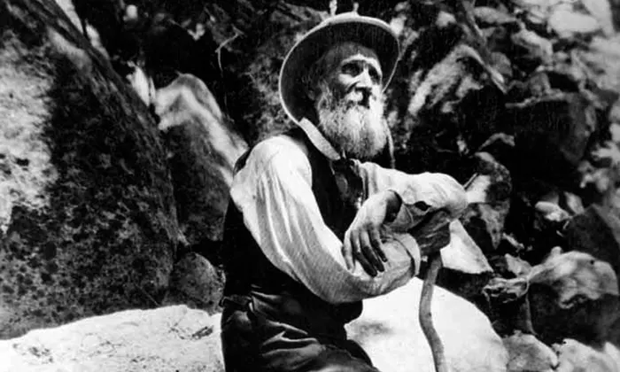

National Parks | Policy
Should we protect national parks?
1 October 2020
The case for protecting our gems
Introduction
With the first Trump administration coming to an end, we can reflect on its approach to nautre. Just now, in August 2020 Trump signed the Great American Outdoors Act: a multi-billion dollar project to support nature and forests. While the bill is generous and helpful by itself, it stands in contrast with Trump’s earlier actions. But then again – and as we shall see - politics is a paradoxical realm.
Trump's record
In the 3 years before Trump signed the Great American Outdoors Act he had been weakening NEPA: the National Environment Policy Act. In high-profile court cases about the environment or public health concerns, Nepa is one of the most commonly used legislations. It allows small communities to raise their voice against local projects and lawyers to defend public health and environmental concerns against the state or companies.

The NEPA act has been integral to many lawsuits
For example, Nepa helped to prevent the Trump administration from drilling oil in Canyonlands national park. It may also stand in the way of Trump’s recent plan to log in Alaska’s Tongass national forest. Given the chance that Trump might get re-elected in November, we should really be discussing this approach toward American national parks.
The Debate
Weaking the NEPA act certainly have proponents, who herald the quickening of construction and infrastructure improvements. Indeed, NEPA lawsuits can delay projects for many years and is known as a nuissance among businesses and governments seeking to build infrastructure. However, this being a magazine for environmental protection, I am – of course - going to oppose the case in this article.
National Gems
All American national parks are beautiful, and each in its own respect. Take the Grand Canyon, Yosemite or small ones like Hot Springs national park. They are places where people come to rest, enjoy their free time and spend their holidays. I am among the many who had beautiful childhood moments and moments of healing while I was there.
Arches National Park in Utah
In 2019, there 327 Million visits to national parks. They come for holidays or the unique sights that the parks have to offer. The national park Service reports that they contribute 40 Billion dollars to the U.S. economy. What is not calculated, but I certainly want to note is that the parks may help American productivity numbers, as people can rest and spend holidays in them.
Biophilia
‘Nature is good for everyone’. It sounds like a loose and random statement. But, over the past 30 years, science has proved nature is truly ‘good for everyone’. Science calls people’s natural inclination towards nature ‘Biophilia’ (meaning loving nature).
"Nature is good for everyone"
There are so many Biophilia studies that prove how much people desire and need nature around them. For instance, access to nature has been proven to improve school classes, psychology sessions, productivity at work and recovery at hospitals. Even just seeing nature from a window or having a small plant in a room can have significants benefits in many respects for people.
What is America
Trump’s has weakened the NEPA act because of his desire to improve America’s economy. And for some people the question ‘What is America?’ should always be answered with a thriving nation with a great economy. And, in fact, there is nothing wrong with that statement. But should we truly use the little national parks we have left to get some marginal gains for America’s economy? Should we indeed chop pieces of forest or sacred lands to support construction projects and improve infrastructure?
A picture of John Muir (1838-1914)
It is here where I introduce to you John Muir, a great friend of former president Theodore Roosevelt. John Muir went on trips with Roosevelt and advised him to formally protect the beauties of the land that they saw. It was at that time (1901-1909) that T Roosevelt formed the very first national parks of america. Now, one of the strongest pitches that John Muir ever gave and seals this article very beautifully with an open question to you is this:
“What is there to protect [in America] if there is nothing left?”
List of Sources
Here is a list of sources that were used for this article. To note: I did my best to remain apolitical in this article.
- The American Great Outdoors Act
- The NPCA's comment on US policy regarding nature
- Some of the reasons for weakening NEPA
- The NEPA being used for community and public health purposes in one of America's most controversial legal battles
- Trump's plan to start logging in Alaskan national forest
- Plans to drill oil in 2 national parks
- Plans to start logging in Tongass national forest
- Plans to allow fishing at a maritime national monument
- Biophilia and therapy
- Biophilia in the classroom
- Biophilia in Hospitals
- History of T. Roosevelt
- John Muir's writings